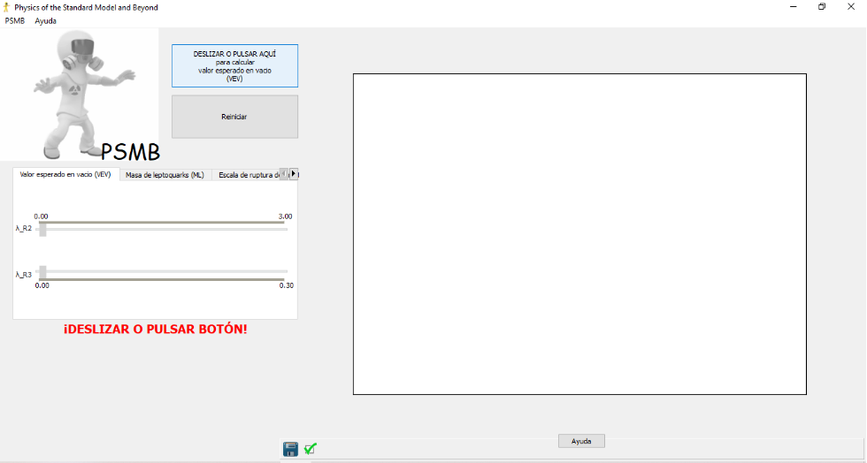

Bienvenid@s a PSMB (Descarga PSMB para Windows aquí)
Physics of the Standard Model and Beyond (PSMB) es un software educativo para modelar el comportamiento físico de partículas elementales en el marco del Modelo Estándar y sus extensiones, destinado a automatizar el cálculo simbólico y numérico de las ecuaciones del modelo de Pati-Salam, permitiendo al usuario explorar interactivamente su espacio paramétrico, visualizar las etapas de ruptura de simetría y contrastar sus predicciones con resultados experimentales disponibles.

PSMB permite a los estudiantes trascender el cálculo manual y centrarse en la física detrás del Modelo Estándar y sus extensiones. El uso de software especializado en física del Modelo Estándar (SM) y Más Allá del Modelo Estándar (BSM) tiene un impacto profundo en la educación científica y la formación de futuros físicos teóricos y experimentales.
PSMB representa una innovación educativa que integra la teoría de partículas elementales con las tecnologías de simulación y cálculo simbólico, fortaleciendo el aprendizaje, la capacidad analítica y la formación científica de los estudiantes de física contemporánea.
Potencial de Higgs (PH)
La construcción del potencial de Higgs comienza identificando primero el grupo de simetría subyacente y luego seleccionando representaciones adecuadas para los campos de Higgs que romperán la simetría apropiadamente. En el contexto del modelo de Pati-Salam, los campos de Higgs se asignan típicamente a representaciones como \((4, 2, 1)\) y \((4, 1, 2)\), que son consistentes con la estructura del grupo de gauge \(SU(4)_C \times SU(2)_L \times SU(2)_R\). Estas representaciones se eligen para facilitar la ruptura de simetría paso a paso hasta el Modelo Estándar. El potencial de Higgs resultante describe las interacciones entre dos campos escalares, denotados \(L_i^\alpha\) y \(R_i^\alpha\), que corresponden a los sectores "izquierdo" (\(L\)) y "derecho" (\(R\)) dentro del marco de simetría extendida del modelo.
Estos campos desempeñan un papel central en la ruptura de la simetría y la generación de términos de masa para fermiones a través de Acoplamientos de Yukawa. El potencial considerado es:
Consideremos \(L\) y \(R\) como una 8-tupla, \(L^{i\alpha}\) y \(R^{i\alpha}\), con \(i=1,2\) y \(\alpha=1,2,3,4\) índices para \(SU(2)_R\) y \(SU(4)\), respectivamente. Worah introduce dos bosones de Higgs, los diestros, en la representación \((4,1,2)\):
Eso se utilizará para la ruptura de simetría del grupo de Pati-Salam al del Modelo Estándar:
Y los bosones de Higgs zurdos \(L^{i\alpha}\sim(4,2,1)\), con \(L_{i\alpha}=(L^{i\alpha})^*\), que será responsable de la ruptura de simetría del grupo electrodébil al electromagnetismo:
Suponemos que \(R\) se transforma en la representación fundamental de \(SU(4)\) y \(SU(2)_R\), pero trivialmente bajo \(SU(2)_L\) (es decir, está en la representación \((4,1,2)\). Con esto queremos decir que \(R^{i\alpha}\mapsto M_{ij}N_{\alpha\beta}R^{j\beta}\), donde \(M,N\) son los elementos de \(SU(2)_R\) y \(SU(4)\), respectivamente). De manera similar, tomemos \(R_{i\alpha}\) como el conjugado transpuesto de \(R^{i\alpha}\). El potencial que corresponde a la ruptura de la primera simetría es
Los campos de Higgs pueden expresarse en términos de matrices hermíticas debido a la generalización del mecanismo de Englert-Brout-Higgs para generar masas para bosones de gauge desde el caso familiar de teorías de campos cuánticos hermíticos a un marco más general de teorías de campos PT-simétricas. Por lo tanto, podemos escribir \(Y_{\alpha}^{\sigma}=R_{i\alpha}R^{i\sigma}\), como \(Y\) es hermitiana, es diagonalizable: \(Y_{\alpha}^{\sigma}=\delta_{\alpha}^{\sigma}v_{\sigma}\); aquí, \(v_{\sigma}\) son los valores propios de la matriz \(Y\), y \(\delta_{\alpha}^{\sigma}\) es la delta de Kronecker, que es igual a 1 si \(\alpha=\sigma\) y 0 en otro caso. Y se puede escribir como
o equivalentemente
Para determinar el VEV, resolvemos la condición de extremo \(\partial V/\partial t=0\), lo que da como resultado:
Este sistema de ecuaciones debe resolverse para obtener los valores de \(v_\alpha\) en función de \(\mu_R\), \(\lambda_{R1}\) y \(\lambda_{R2}\), esto dará como resultado el VEV en función de estos parámetros:
En este caso se reduce a:
Potencial de Higgs modificado
Todas las entradas al VEV son iguales, lo que sugiere que el sistema podría estar en un estado simétrico, ya que no se favorece ninguna dirección en particular en el espacio de parámetros del campo, y por lo tanto no habría ruptura espontánea de simetría. En el contexto de modelos más allá del Modelo Estándar, decidir si existe RES cuando el VEV tiene todas sus entradas iguales es complejo, y requiere un análisis de la estructura del potencial y las simetrías involucradas. La modificación del Potencial de Higgs en modelos más allá del Modelo Estándar es un enfoque viable y comúnmente utilizado para inducir la ruptura de simetría e interacciones del modelo. Esta modificación puede conducir a nuevas dinámicas y a la aparición de fenómenos físicos.
Aquí, \(V_{SG}\) representa el potencial que se origina en el grupo de simetría del modelo propuesto, en este caso el modelo de Pati-Salam; y \(V_C\) es el potencial de control que proponemos para inducir la ruptura de simetría. Para \(V(v_\alpha)\) proponemos un término cuadrático \((\lambda_3 v_4^2)\) como potencial de control para el potencial de Higgs, lo que lleva a la ruptura de la simetría.
Valor Esperado de Vacío (VEV)
Con el Potencial de Higgs modificado, obtenemos:
y
Un VEV con los tres primeros componentes iguales (\(v_1=v_2=v_3=v\)) y el cuarto diferente (\(v_4=v_x\neq v\)) rompe la simetría de \(\mathrm{SU}(4)\) porque introduce una distinción explícita entre los estados de quark y leptón. Esta configuración rompe los generadores que mezclan los tres primeros componentes con el cuarto, dejando como subgrupo residual \(\mathrm{SU}(3)_C \times \mathrm{U}(1)_{B-L}\).
Cuando el cuarto componente del VEV es distinto de cero, se puede generar un nuevo mínimo en el Potencial de Higgs que no respeta la simetría original del modelo Pati-Salam. Esto puede conducir a la ruptura de simetría que permite la generación de masas para partículas a través de mecanismos como Higgs, donde las excitaciones del Campo de Higgs están relacionadas con los Bosones de Nambu-Goldstone. En este sentido, la ruptura de simetría puede entenderse como un proceso que no solo afecta las interacciones electrodébiles, sino que también puede influir en la estructura de las interacciones de quarks y leptones, así como en la generación de nuevas partículas.
Masa de leptoquarks (ML)
Escala de ruptura de simetría (ERS)
En modelos que amplían el Modelo Estándar mediante la simetría Pati-Salam (\(SU(2)_L \times SU(2)_R \times SU(4)_C\)) o cadenas de ruptura que la incluyen (p. ej., PS → LR → SM), la "escala de ruptura" se refiere a la energía a la que una etapa de la secuencia de desdoblamiento de la simetría se rompe espontáneamente mediante VEV de campos Higgs apropiados o por mecanismos análogos. Esta escala marca el inicio de una nueva estructura gauge y, por tanto, la transición entre regímenes de simetría. En términos operativos, se asocia a la escala de VEV de los campos que realizan la ruptura (por ejemplo, campos que rompen PS a LR o LR a SM) y a la energía en la que aparecen o desaparecen mediadores gauge correspondientes. Este concepto aparece de forma explícita en discusiones sobre descomposición de PS hacia LR y luego hacia SM, donde la escala de ruptura del PS y las escalas intermedias determinan cuándo se aplica cada teoría. En este sentido, la escala de ruptura es intrínsecamente dependiente del escenario de ruptura elegido y de la estructura del UV completion (GUT/NCG, etc.).
En el modelo de Pati-Salam, es la energía en la que se rompe \(SU(2)_L \times SU(2)_R \times SU(4)_C\) a un subgrupo que avanza hacia el LR o directamente hacia el SM, dependiendo de la ruta de ruptura considerada. En muchos escenarios, \(M_{PS}\) se sitúa entre \(10^5\) y \(10^{16}\) GeV, según la literatura de GUT con PS intermedio y el contenido de Higgs elegido; en modelos con PS como etapa intermedia, \(M_{PS}\) típicamente fija la base para la unificación de couplings y para la aparición de nuevos bosones gauge y scalars característicos de PS. Esta escala se determina mediante análisis de RGEs y las condiciones de unificación, y puede acotarse por límites fenomenológicos (protones, leptogénesis, etc.) en ciertas construcciones, o por la necesidad de que aparezcan señales a escalas accesibles (p. ej., LR a TeV) en otros escenarios.
Masa de neutrinos (MN)
Masa de bosones escalares (MBE)
Expandiendo el potencial de Higgs alrededor del VEV se introducen nuevos términos en la lagrangiana, lo cual facilita la mezcla de campos escalares. Esto es relevante en modelos que predicen la existencia de leptones vectoriales adicionales o bosones gauge, los cuales podrían detectarse a través de sus interacciones con el Higgs. El potencial a expandir es el potencial de Pati-Salam más el potencial de control, ambos en la representación del campo de Higgs:
Para expandir el potencial \(V(R)\) alrededor del VEV \(R_{i\alpha}^{(0)}\) más una perturbación \(\delta R_{i\alpha}\), descomponemos \(R_{i\alpha}\) como sigue:
donde \(R_{i\alpha}^{(0)}\) es el VEV del campo \(R_{i\alpha}\), y \(\delta R_{i\alpha}\) representa las fluctuaciones alrededor del VEV. La expansión hasta términos cuadráticos es:
En modelos más allá del Modelo Estándar, pueden identificarse dos tipos de términos de masa en el potencial de Higgs perturbado: términos cuadráticos y términos de interacción. Estos términos son fundamentales para entender cómo se generan las masas de las partículas en estos modelos extendidos. Los términos cuadráticos en el potencial de Higgs son aquellos que se relacionan directamente con la masa del bosón de Higgs. En el contexto del Modelo Estándar, el término cuadrático es crucial para la estabilidad del potencial y para la formación de un mínimo en él, lo cual permite que el campo de Higgs adquiera un VEV distinto de cero. Este VEV proporciona masa a las partículas mediante el mecanismo de Higgs.
En modelos más allá del Modelo Estándar, como los modelos de dos dobletes de Higgs, también se incluyen términos cuadráticos que afectan la masa de nuevos bosones de Higgs y posibles fermiones. Por otro lado, los términos de interacción describen cómo el campo de Higgs interactúa con otros campos, como los fermiones y los bosones gauge. Estos términos son esenciales para la generación de masas de partículas mediante la ruptura de simetría. En el caso de modelos como Pati-Salam o los modelos de Higgs compuesto, los términos de interacción pueden ser más complejos e incluir múltiples campos de Higgs, resultando en un potencial más rico y la posibilidad de nuevas interacciones.
En nuestro modelo, los términos cuadráticos, cruciales para determinar las masas y mezclas de las fluctuaciones, son:
El primer término \(-2\mu_R^2\delta R_{i\alpha}\delta R^{i\alpha}\), tiene una masa efectiva dada por \(-2\mu_R^2\), este término da una contribución uniforme a las masas de todos los componentes de las fluctuaciones \(\delta R_{i\alpha}\). El segundo término \(4\lambda_{R1}R_{i\alpha}^{(0)}R^{(0)i\alpha}\delta R_{i\alpha}\delta R^{i\alpha}\) describe cómo el VEV del campo de Higgs \(R_{i\alpha}^{(0)}\) afecta las masas cuadradas de las fluctuaciones \(\delta R_{i\alpha}\). El tercer término \(4\lambda_{R2}R_{j\beta}^{(0)}R^{(0)j\alpha}\delta R_{i\alpha}\delta R^{i\alpha}\) también depende del VEV \(R_{j\beta}^{(0)}R^{(0)j\alpha}\), pero tiene una estructura más específica. Los índices \((j,\beta)\) y \((j,\alpha)\) están relacionados, lo que introduce un acoplamiento cruzado entre diferentes componentes de las fluctuaciones; describe cómo la mezcla entre los componentes del VEV afecta a las masas cuadráticas. El cuarto término \(\lambda_{R3}\delta R_{i4}\delta R^{i4}\) es específico para las fluctuaciones \(\delta R_{i4}\), es decir, aquellos componentes donde el índice \(\alpha=4\), representa un término de masa específico para los componentes \(\delta R_{i4}\), independiente de otras fluctuaciones. Este término introduce una masa efectiva específica para las fluctuaciones \(\delta R_{i4}\), modulada únicamente por el acoplamiento \(\lambda_{R3}\).
Para determinar \(M_{i\alpha,j\beta}\), derivamos dos veces \(V\) con respecto a \(\delta R_{i\alpha}\) y \(\delta R_{j\beta}\):
Con el VEV diagonal \((v,v,v,v_x)\), el término de masa es:
Las curvas para \(m_{ii}\) y \(m_{i4}\) se sobreponen (Figura \ref{fig:enter-label}) debido a que la contribución adicional de \(\lambda_{R3}\) al término \(m_2^2\) es pequeña comparada con los términos dominantes. Esto coloca a \(m_{ii}\approx m_{i4}\) en la escala de valores considerada. El término añadido al potencial para provocar la ruptura espontánea de simetría no da lugar a una nueva masa. La masa de Higgs \(m_{ii}\) para el valor estable de \(\lambda_{R3}=2.0\) es de 69.56 TeV.
Masa de bosones vectoriales (MBV)
Los bosones de Nambu-Goldstone son excitaciones sin masa que surgen de la ruptura espontánea de simetrías continuas globales en teorías cuánticas de campos. Este fenómeno fue formalizado por primera vez en 1962 por Goldstone, Salam y Weinberg, quienes demostraron que por cada generador de simetría roto debe existir un bosón de Nambu-Goldstone masivo. La matriz de masas se establece mediante la forma de la lagrangiana después de la ruptura espontánea de simetría. La matriz de masas se obtiene a partir de los términos cuadráticos en la lagrangiana, los cuales resultan de expandir el potencial de Higgs y los términos cinéticos alrededor del VEV. En el caso de múltiples campos de Higgs, la matriz de masas puede ser una matriz \(n \times n\) que puede diagonalizarse para obtener las masas físicas de los bosones de Higgs. El término cinético del campo de Higgs es:
donde el derivado covariante es:
Sustituyendo el VEV \(R_0\) y expandiendo, el término relevante para las masas de los bosones gauge es:
La matriz de masas \(M_{AB}\) se define como:
El VEV del campo de Higgs \(R_0\) es:
Este VEV preserva la simetría \(SU(3)_C \times U(1)_{B-L}\), pero rompe \(SU(4)\rightarrow SU(3)_C \times U(1)_{B-L}\). Los generadores de \(SU(4)\) interactúan de manera distinta con los componentes del VEV, lo cual determina las masas de los bosones gauge. Los \(15\) generadores de \(SU(4)\) (Anexo 1) pueden clasificarse como: \(8\) generadores de \(SU(3)_C\) (\(T^a, a = 1,\dots,8\)); \(1\) generador asociado con el \(U(1)_{B-L}\) (\(T^{15}\)); y \(6\) generadores que conectan \(SU(3)_C\) con la dirección \(v_x\).